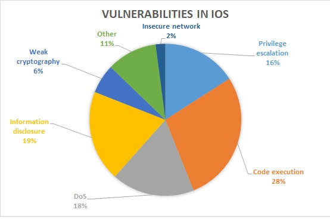
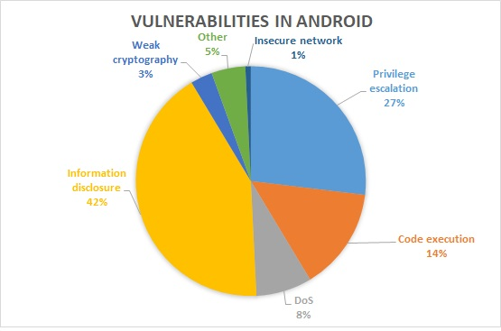

Nowadays people prefer to use their smartphone for watching video, playing games, ordering food, chatting with friends and so on. We use mobile devices everywhere and store a lot of reliable information about us. In times of cyberwars and insecurity, we must take care of our privacy and identity. Moreover, it depends not only on us, but also on mobile security. This research shows and describes the state of phone and mobile application security in 2020, after which we try to predict the potential security threats in 2021.
While checking the catalog of Common Vulnerabilities and Exposures (CVE), we found about a thousand vulnerabilities in mobile applications and devices discovered in 2020. We have categorized them into major vulnerability categories and converted them to percentage diagrams, what we can operate with in the research. First, the vulnerabilities were calculated for Android and IOS platforms separately in order to investigate the main weaknesses in each of the architectures. After that we combined our statistics to show the main security flaws in the mobile environment general
Comparing the statistics for IOS and Android platforms, it is important to note that the researchers found more than twice fewer vulnerabilities in IOS compared to Android architecture. The most general vulnerability found in IOS is code execution, while in Android it is information disclosure. Let's take a look at the diagrams presented and highlight the most common types of vulnerabilities.
 The most common vulnerability found in the mobile environment in 2020 is information disclosure. There are many vectors of the information disclosure and leakage ranging with logging and debugging in production environments to privilege escalation, remote code execution and full device hijacking. The impact from this vulnerability may vary from low to critical level, because information is too vast and there are too many ways to get it. The occurrence of information leakage is mainly a human factor, because this weakness consists simply of human mistakes such as hardcoded API keys and credentials, logging and debugging output, exported activities, lack or weak cryptography and so on. There are mentioned the most interesting and cruicial CVEs:
- CVE-2020-0497
In canUseBiometric of BiometricServiceBase, there is a missing permission check. This could lead to local information disclosure with no additional execution privileges needed. User interaction is not needed for exploitation.Product: AndroidVersions: Android-11Android ID: A-158481661
- CVE-2020-0390
In the app zygote SE Policy, there is a possible permissions bypass. This could lead to local information disclosure with no additional execution privileges needed. User interaction is not needed for exploitation.Product: AndroidVersions: Android-10 Android-11Android ID: A-157598026
- CVE-2020-0379
In the Bluetooth service, there is a possible spoofing attack due to a logic error. This could lead to remote information disclosure of sensitive information with no additional execution privileges needed. User interaction is needed for exploitation.Product: AndroidVersions: Android-8.0 Android-8.1 Android-9 Android-10 Android-11Android ID: A-150156492
Privilege escalation vulnerabilities often arise due to authentication and access control security flaws. Insufficient permission checking leads to granting users unauthorized access to actions that should be protected from them or the application in general. Exploiting this type of vulnerability in mobile applications can lead to gaining administrative rights, other users' rights or even to system rights by exploiting binary weaknesses at the kernel level such as buffer overflow, heap and memory corruption and so on. Privilege escalation vulnerability was ranked second on the list of mobile vulnerabilities in 2020, indicating the risk of an increased number of mobile malware being granted privileged access to a device. The most significant vulnerabilities are shown there:
- CVE-2020-0481
In AndroidManifest.xml, there is a possible permissions bypass. This could lead to local escalation of privilege allowing a non-system app to send a broadcast it shouldn't have permissions to send, with no additional execution privileges needed. User interaction is not needed for exploitation.Product: AndroidVersions: Android-11Android ID: A-157472962
- CVE-2020-0209
In multiple functions of AccountManager.java, there is a possible permissions bypass. This could lead to local escalation of privilege with no additional execution privileges needed. User interaction is not needed for exploitation.Product: AndroidVersions: Android-10Android ID: A-145206842
Code execution vulnerability was ranked third overall and first in the list of IOS vulnerabilities. The vulnerability ranges from arbitrary to remote code execution (RCE), which is the most dangerous and high-paid vulnerability. Code execution arises due to weak binary protection in the form of buffer overflow, heap corruption, memory leakage and improper memory permissions checks. Unfortunately, assuming that IOS is a more secure operating system than Android, it turns out to be more vulnerable to code execution vulnerability.
There are some examples of the vulnerability found in 2020:
- CVE-2020-1909
A use-after-free in a logging library in WhatsApp for IOS prior to v2.20.111 and WhatsApp Business for IOS prior to v2.20.111 could have resulted in memory corruption, crashes and potentially code execution. This could have happened only if several events occurred together in sequence, including receiving an animated sticker while placing a WhatsApp video call on hold.
- CVE-2020-0438
In the AIBinder_Class constructor of ibinder.cpp, there is a possible arbitrary code execution due to uninitialized data. This could lead to local escalation of privilege if a process were using libbinder_ndk in a vulnerable way with no additional execution privileges needed. User interaction is not needed for exploitation.Product: AndroidVersions: Android-11 Android-10Android ID: A-161812320
- CVE-2020-6828
malicious Android application could craft an Intent that would have been processed by Firefox for Android and potentially result in a file overwrite in the user's profile directory. One exploitation vector for this would be to supply a user.js file providing arbitrary malicious preference values. Control of arbitrary preferences can lead to sufficient compromise such that it is generally equivalent to arbitrary code execution.
*Note: This issue only affects Firefox for Android. Other operating systems are unaffected.*. This vulnerability affects Firefox ESR 68.7.
DoS related vulnerabilities are in the fourth tier of our ranking. This is the worst vulnerability ever, which can disable all services at the same time. DoS usually occurs due to improper validation and weak defense against fuzzing methods. As far as the application is concerned, DoS can only cause the application to crash or terminate immediately. In case of firmware or bootloader failure, there is a small chance to turn on the device afterwards.
The most important DoS vulnerabilities discovered in 2020 are shown there:
- CVE-2020-27853
Wire before 2020-10-16 allows remote attackers to cause a denial of service (application crash) or possibly execute arbitrary code via a format string. This affects Wire AVS (Audio, Video, and Signaling) 5.3 through 6.x before 6.4, the Wire Secure Messenger application before 3.49.918 for Android, and the Wire Secure Messenger application before 3.61 for IOS. This occurs via the value parameter to sdp_media_set_lattr in peerflow/sdp.c.
- CVE-2020-0469
In addEscrowToken of LockSettingsService.java, there is a possible loss of the synthetic password due to logic error. This could lead to local denial of service with no additional execution privileges needed. User interaction is not needed for exploitation.Product: AndroidVersions: Android-11Android ID: A-168692734
Having less than 6%, weak or broken cryptography took the fifth place. CVE catalog does not contain much information about cryptography issues except for the simplest ones such as the hardcoded cryptographic keys and missed encryption, which do not require additional routines for exploitation. Performing strong encryption is a complex process, the developer must follow best practices to securely implement an encryption workflow.
There are some examples of sending sensitive data unencrypted over the network:
- CVE-2020-13637
An issue was discovered in the stashcat app through 3.9.2 for macOS, Windows, Android, IOS, and possibly other platforms. It stores the client_key, the device_id, and the public key for end-to-end encryption in cleartext, enabling an attacker (by copying or having access to the local storage database file) to login to the system from any other computer, and get unlimited access to all data in the users' context.
- CVE-2020-3841
The issue was addressed with improved UI handling. This issue is fixed in IOS 13.3.1 and iPadOS 13.3.1, Safari 13.0.5. A local user may unknowingly send a password unencrypted over the network.
The last highlighted vulnerability is insecure network. This type of vulnerability arises due to network and firewall misconfiguration, improper certificate validation and so on. It allows Man-in-the-middle implementation to sniff the traffic from the specific application or from the entire device. Another way that insecure network vulnerabilities can arise is through the use of public Wi-Fi, which can be controlled by an attacker. Successful exploitation could lead to information disclosure, remote code execution or even privilege escalation by simulating a device.
There are enumerated the most significant insecure network vulnerabilities:
- CVE-2020-0119
In addOrUpdateNetworkInternal and related functions of WifiConfigManager.java, there is a possible man in the middle attack due to improper certificate validation. This could lead to remote information disclosure with no additional execution privileges needed. User interaction is needed for exploitation.Product: AndroidVersions: Android-10Android ID: A-150500247
- CVE-2020-8989
In the Voatz application 2020-01-01 for Android, the amount of data transmitted during a single voter's vote depends on the different lengths of the metadata across the available voting choices, which makes it easier for remote attackers to discover this voter's choice by sniffing the network. For example, a small amount of sniffed data may indicate that a vote was cast for the candidate with the least metadata. An active man-in-the-middle attacker can leverage this behavior to disrupt voters' abilities to vote for a candidate opposed by the attacker.
After preparing the statistics for the current year, we have analyzed the mobile attack surface and will try to guess what potential security threats mobile devices will face in 2021. 1. Due to the significant number of privilege escalation and code injection vulnerabilities, the mobile environment is a great place to distribute and run malware, which is why malware will be the first threat in 2021. 2. The next major threats are data loss, privilege escalation and code execution, which will be relevant for several years as they were high for 2020. 3. As the time for SMS fraud is almost over, we may see phishing attacks targeting mobile users in 2021 and beyond. We have already encountered a couple of phishing attacks on Telegram users at the end of 2020 and this may become a serious problem in the coming years, since phishing URLs can be delivered also via SMS. Having presented possible security threats in 2021, it should be clarified who will be the main target. Since installed applications can include chats, password managers and applications used for work, attackers can gain access to confidential documents, credentials and subsequently impersonate the current user to perform malicious actions against the company he works for, for example, to implement phishing or malware campaigns. As with web security the main target will be the company and its resources.
- https://cve.mitre.org/cgi-bin/cvekey.cgi?keyword=ios
- https://cve.mitre.org/cgi-bin/cvekey.cgi?keyword=android